在黑苹果上部署开发环境
使用ubuntu的nfs
首先在ubuntu上安装nfs服务
sudo apt install nfs-kernel-server
创建共享目录并赋予权限
sudo mkdir /home/rl/share
sudo chmod 777 /home/rl/share
配置/etc/exports文件
sudo vim /etc/exports
写入下边内容
/home/rl/share *(rw,sync,insecure,no_subtree_check,no_root_squash)
注意 `insecure`必须填，不然在macos的Finder中无法访问nfs目录
在MacOS中访问ubuntu的nfs目录
首先在终端中查看共享目录共享是否成功
$ showmount -e 192.168.50.30
Exports list on 192.168.50.30:
/home/rl/share *
然后在Finder中链接nfs服务
在Finder图标上右键选择连接服务器，填入共享目录，如下图点击connect。
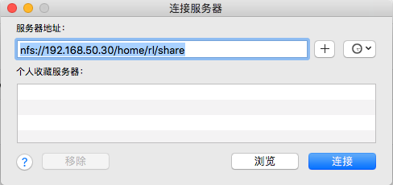
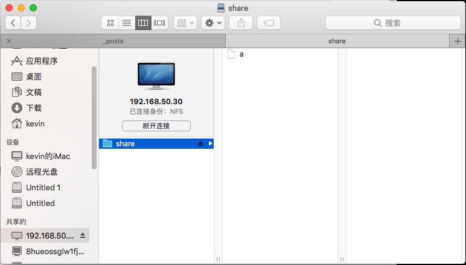
深度学习环境搭建
参照此教程安装CUDA
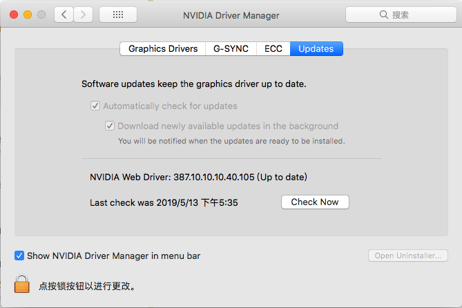
Nvidia driver
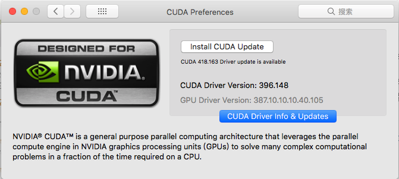
CUDA driver
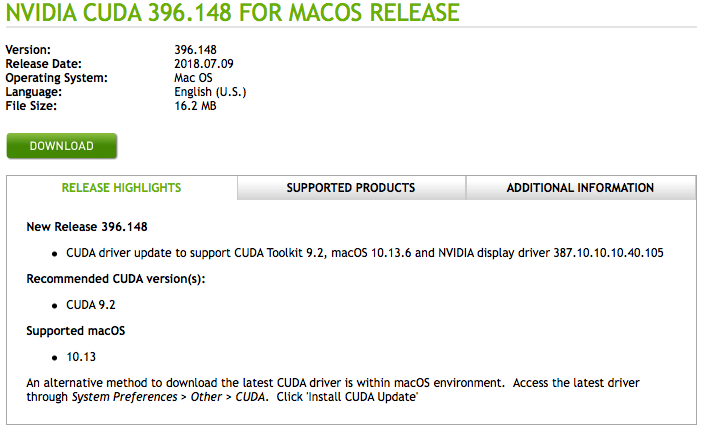
CUDA Toolkits
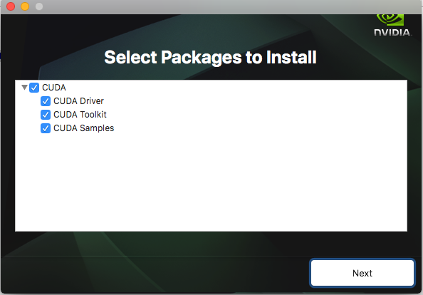
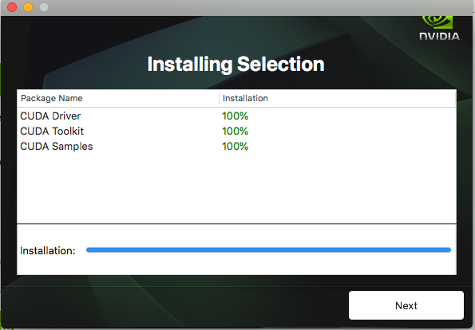
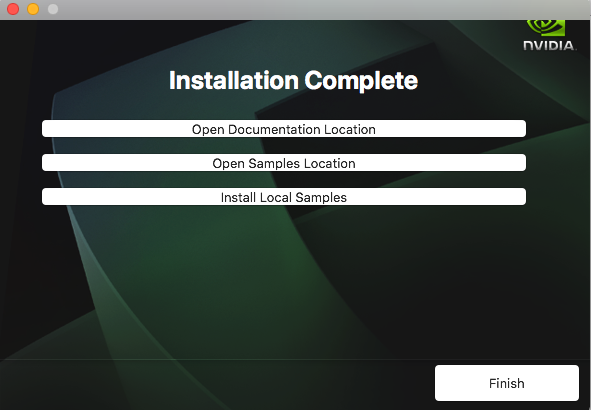
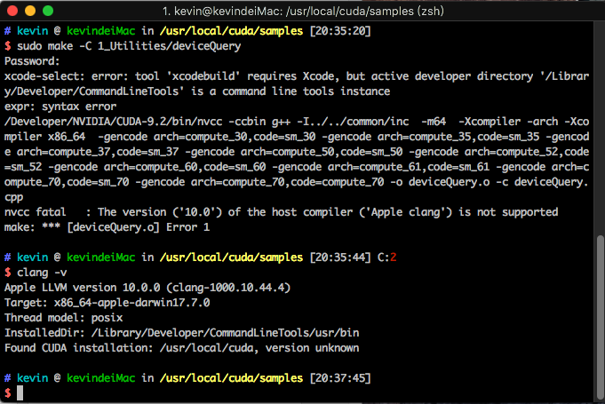
添加环境变量
export CUDA_HOME=/usr/local/cuda
export DYLD_LIBRARY_PATH="$CUDA_HOME/lib:$CUDA_HOME/extras/CUPTI/lib"
export LD_LIBRARY_PATH=$DYLD_LIBRARY_PATH
export PATH=$DYLD_LIBRARY_PATH:$PATH
export flags="--config=cuda --config=opt"
export PATH="/Developer/NVIDIA/CUDA-9.2/bin:$PATH" #nvcc 命令路径
以下为尝试，未能解决问题。
首先需要安装Xcode，登录苹果开发者
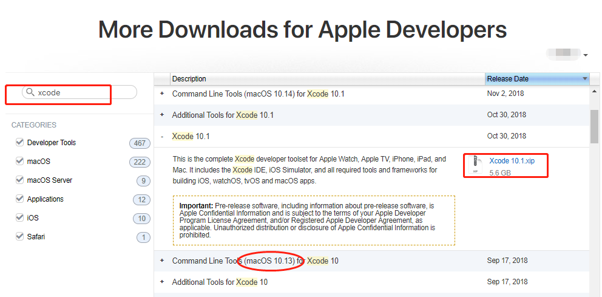
下载完成后得到一个.xip压缩文件，双击进行校验，校验完成后会自动解压。解压完成得到Xcode.app拖进/Applications中完成安装。
sudo xcode-select --switch /Applications/Xcode.app/Contents/Developer/
再次执行编译命令
make -C ./1_Utilities/deviceQuery
然后会显示
Agreeing to the Xcode/iOS licese requires admin privileges, please run `sudo xcodebuild -license ` and then retry this command
然后执行
sudo xcodebuild -license
按回车
按space直到最后然后输入 agree
再次执行编译命令,报错
nvcc fatal : The version ('10.0') of the host compiler ('Apple clang') is not supported
网上找到解决方案，此错误是Xcode Command Line版本太高了，需要切换为低版本的。
下载安装Command Line Tools macOS 10.13 for Xcode9.2
sudo xcode-select --switch /Library/Developer/CommandLineTools
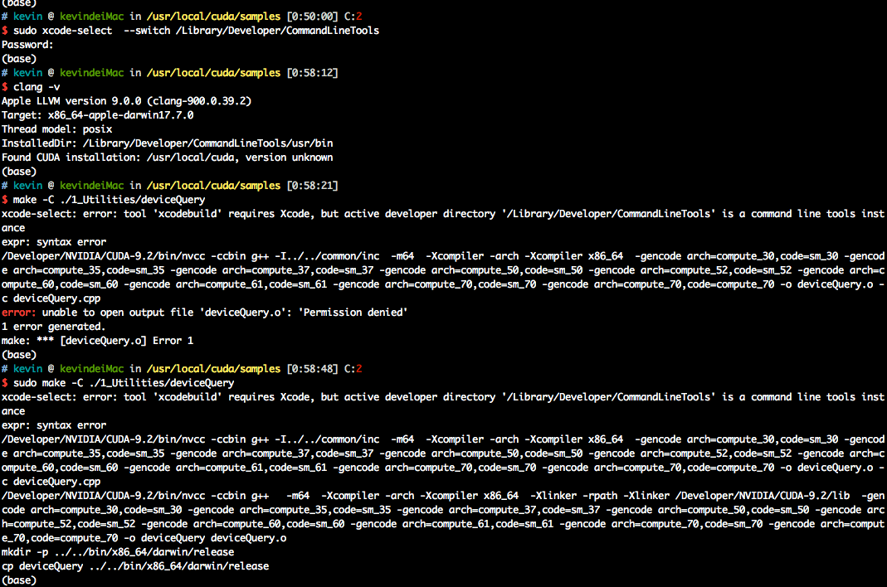
如图，编译成功，执行编译完的程序，发现能够正常识别显卡。
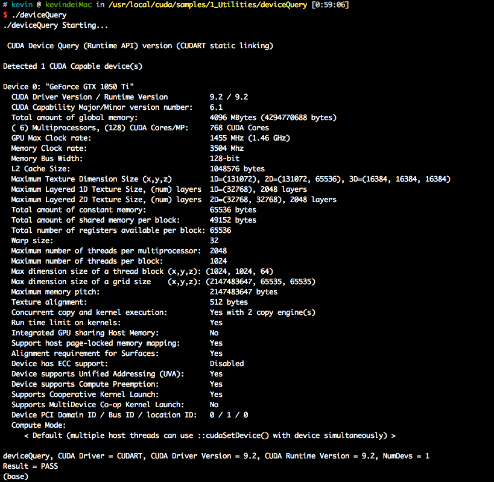
cudnn
参照教程我也下载了cudnn v7.2.1下载完成双击解压，然后按照下边过程安装。
$ sudo cp cuda/include/cudnn.h /usr/local/cuda/include/
$ sudo cp cuda/lib/libcudnn* /usr/local/cuda/lib/
$ sudo chmod a+r /usr/local/cuda/include/cudnn.h /usr/local/cuda/lib/libcudnn*
$ vim ~/.zshrc
写入：export DYLD_LIBRARY_PATH=/usr/local/cuda/lib/:$DYLD_LIBRARY_PATH
$ source ~/.zshrc
测试
$ echo -e '#include "cudnn.h"\n void main(){}' | nvcc -x -c - -o /dev/null -I/usr/local/cuda/include -L /usr/local/cuda/lib -lcudnn
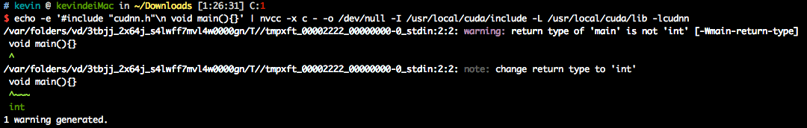
测试
cuda
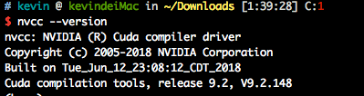
cudnn
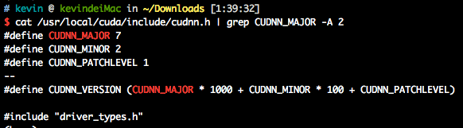
pytorch
cuda和cudnn都安装完了后，安装pytorch。
首先按照这篇blog)尝试安装pytorch 0.4.0但是切换到v0.4.0执行git submodule update init的时候一直报 错，说找不到仓库。
后按照另外一篇blog，直接安装pytorch 1.1.0
git clone --recursive https://github.com/pytorch/pytorch
git submodule update --init --recursive
python setup.py install
安装完成后需要切换出pytorch的源码目录，再执行python然后import torch才有效，不然会报错ModuleNotFoundError: No module named 'torch._C'
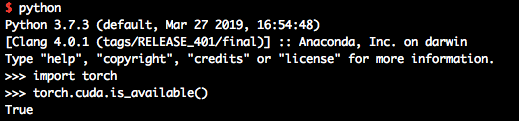